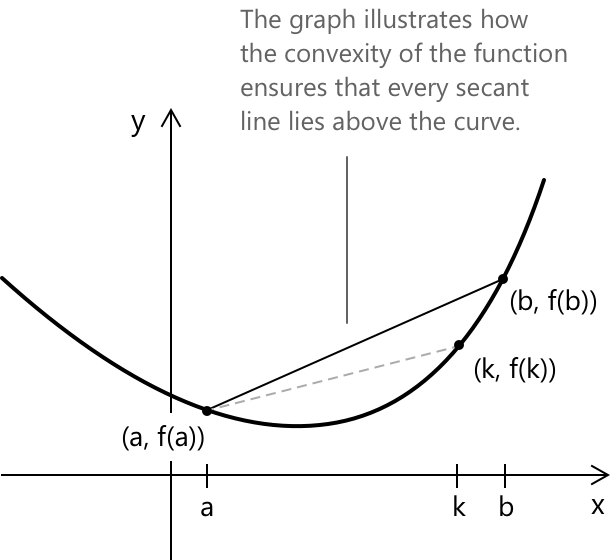

Опуклість та угнутість функцій
Вступ
Дослідження поведінки функції передбачає не лише визначення того, де вона зростає або спадає, але й розуміння того, як її графік вигинається на проміжку. Функція може бути повністю зростаючою або спадаючою на певній області, при цьому все одно мати різні геометричні форми: крива може бути вигнутою вгору або вниз, що впливає на загальний вигляд графіка та характер її зміни.
Ці якісні особливості описуються поняттями випуклості та вгнутості. З геометричної точки зору вони характеризують, чи лежить графік вище або нижче своїх дотичних; аналітично вони визначаються через знак другої похідної , яка кількісно визначає кривизну функції. Встановлення цього зв'язку забезпечує точний критерій для визначення того, як функція вигинається на своїй області визначення.
Випуклість
Кажуть, що функція \(f\) є випуклою на проміжку, якщо для будь-яких двох точок \(a\) та \(b\) на цьому проміжку пряма, що з'єднує \((a, f(a))\) та \((b, f(b))\), залишається вище графіка \(f\) у кожній точці між \(a\) та \(b\). Іншими словами, хорда, що з'єднує ці дві точки, не опускається нижче кривої.

Рівняння січної, що проходить через точки \((a, f(a))\) та \((b, f(b))\), має вигляд
\[ h(x) = \frac{f(b)-f(a)}{b-a}(x-a) + f(a) \]
Щоб функція \(f\) була випуклою, ця пряма повинна лежати вище графіка \(f\) для кожного \(x\) на проміжку між \(a\) та \(b\). Цю вимогу можна виразити нерівністю \(h(x) > f(x)\), яка в розгорнутому вигляді має вигляд:
\[ \frac{f(b)-f(a)}{b-a}(x-a) + f(a) > f(x) \]
Перегрупувавши доданки, отримаємо:
\[ \frac{f(b)-f(a)}{b-a}(x-a) > f(x) – f(a) \]
і, як наслідок:
\[ \frac{f(b)-f(a)}{b-a} > \frac{f(x)-f(a)}{x-a} \]
Цей вираз підкреслює, як випуклість змушує кутовий коефіцієнт січної на всьому проміжку \([a,b]\) бути більшим за кутові коефіцієнти на будь-якому коротшому підпроміжку, що починається в \(a\) (наприклад, пряма, що з'єднує \((f, f(a)))\) та \((k, f(k))\).
Вгнутість
Функція \(f\) є вгнутою на проміжку, якщо для будь-яких двох точок \(a\) та \(b\) на цьому проміжку відрізок прямої, що з'єднує \((a, f(a))\) та \((b, f(b))\), лежить нижче графіка \(f\) для кожної точки між \(a\) та \(b\). Еквівалентно, хорда, що з'єднує дві точки, ніколи не піднімається вище кривої.

Аналогічно до випадку з випуклістю, рівняння січної, що проходить через точки ((a, f(a))) та ((b, f(b))), має вигляд
\[ h(x) = \frac{f(b)-f(a)}{b-a}(x-a) + f(a) \]
Щоб функція \(f\) була вгнутою, ця пряма повинна лежати нижче графіка \(f\) для кожного \(x\) на проміжку між \(a\) та \(b\). Цю умову можна виразити нерівністю (h(x) < f(x)), яка в розгорнутому вигляді має вигляд:
\[ \frac{f(b)-f(a)}{b-a}(x-a) + f(a) < f(x) \]
Перегрупувавши доданки, отримаємо:
\[ \frac{f(b)-f(a)}{b-a}(x-a) < f(x) - f(a) \]
і, як наслідок:
\[ \frac{f(b)-f(a)}{b-a} < \frac{f(x)-f(a)}{x-a} \]
Цей вираз ілюструє, як вгнутість змушує кутовий коефіцієнт січної на всьому проміжку \([a,b]\) бути меншим за кутові коефіцієнти на будь-якому коротшому підпроміжку, що починається в \(a\) (наприклад, пряма, що з'єднує \((a, f(a))\) та \((k, f(k))\).
Критерії другої похідної для опуклості та ввігнутості
Прямим способом визначити кривизну функції з точки зору ввігнутості та опуклості є дослідження її другої похідної. Якщо функція \(f(x)\) є диференційовною, поведінка її другої похідної \(f’'(x)\) визначає проміжки, на яких функція є ввігнутою або опуклою. Іншими словами, маємо:
- \(f’'(x) > 0\), функція \(f(x)\) є опуклою.
- \(f’'(x) < 0\), функція \(f(x)\) є ввігнутою.
- Точки, де \(f’'(x) = 0\), є кандидатами на зміну кривизни, позначаючи місця, де функція може змінювати ввігнутість на опуклість.
Розглянемо, наприклад, простий поліном:
\[f(x) = x^{3} - 3x^{2} + 2x\]
Дослідимо ввігнутість та опуклість функції, аналізуючи поведінку її другої похідної. Як перший крок, обчислимо першу похідну \(f(x)\), яку, оскільки це поліном, можна отримати негайно:
\[f’(x)=3x^2−6x+2\]
Розв'язавши відповідну квадратну нерівність, ми визначимо значення, при яких перша похідна є додатною або від'ємною, і, отже, проміжки, на яких \(f(x)\) зростає або спадає. Для:
\[f’(x)=3x^2−6x+2 \gt 0\]
отримаємо:
\[x < \frac{3 - \sqrt{3}}{3} \quad \lor \quad x > \frac{3 + \sqrt{3}}{3}\]
Зобразивши розв'язання на дійсній прямій, ми можемо візуалізувати проміжки, на яких функція \(f(x)\) зростає або спадає:
| \[ \frac{3 – \sqrt{3}}{3} \] | \[\frac{3 + \sqrt{3}}{3} \] | ||
|---|---|---|---|
| \(f’(x) \) | \( \boldsymbol{+} \) | \( \boldsymbol{-} \) | \( \boldsymbol{+} \) |
| \(f(x) \) | \( \nearrow \) | \( \searrow \) | \( \nearrow \) |
Тепер проаналізуємо поведінку \(f(x)\) стосовно її опуклості та ввігнутості. Для цього обчислимо другу похідну \(f(x)\), яка задана як:
\[f’'(x) = 6x - 6 = 0 \]
Рівняння виконується при \(x = 1\). Для \(x < 1\) друга похідна є від'ємною, що означає, що функція є ввігнутою на цьому проміжку. Для \(x > 1\) друга похідна стає додатною, отже функція є опуклою.
| \[ 1 \] | ||
|---|---|---|
| \(f’'(x) \) | \( \boldsymbol{-} \) | \( \boldsymbol{+} \) |
| \(f(x) \) | \( \bigcap \) | \( \bigcup \) |
| Ввігнутість/Опуклість | Вниз | Вгору |
При \(x = 1\) друга похідна стає рівною нулю, що показує, що функція має точку перегину в \((1, 0)\). Дійсно, маємо:
\[f(1)=13−3⋅12+2⋅1=0\]